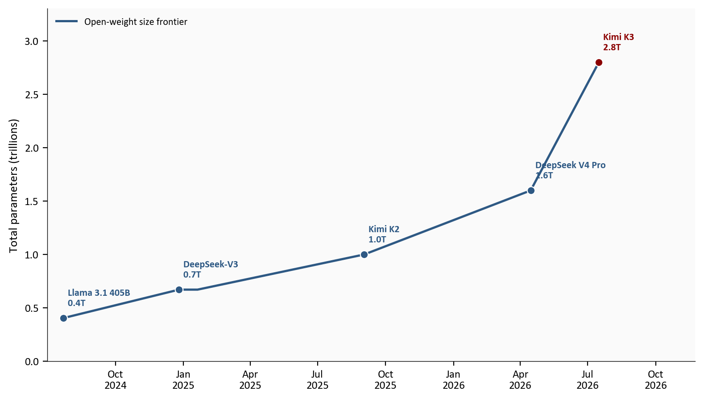
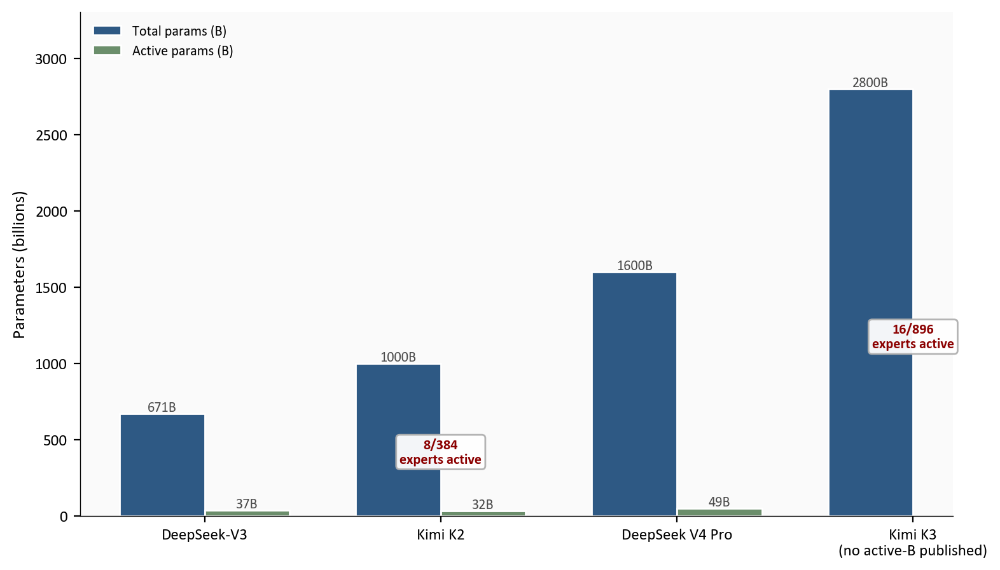
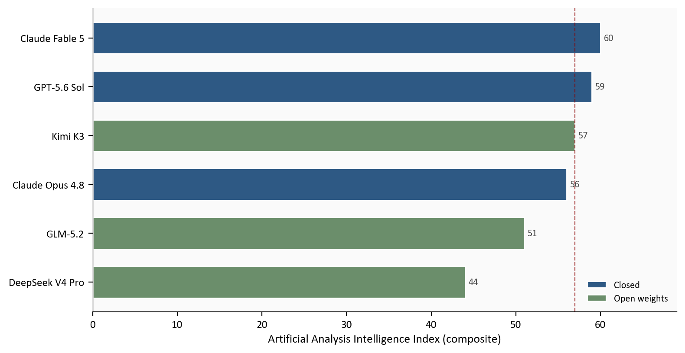
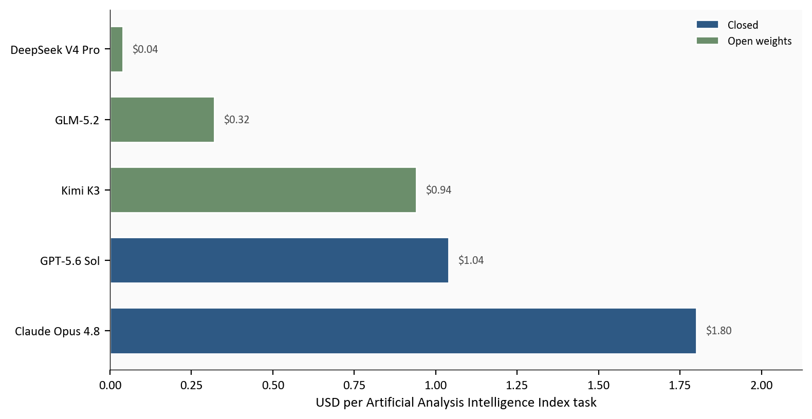
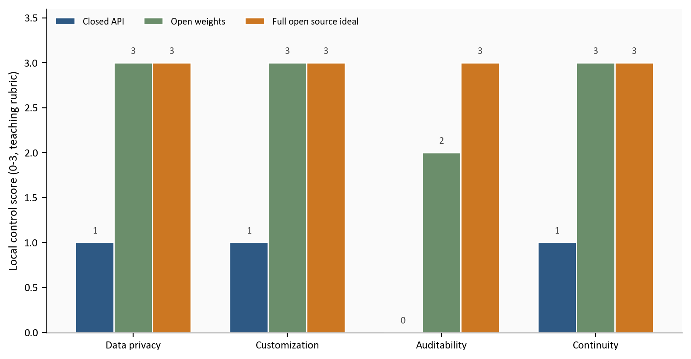

Kimi K3, Open Weights, and Sovereign AI: A Plain-English Guide
Moonshot AI’s Kimi K3 pushes open-weight models toward the closed frontier. What that means for open source, distillation, business strategy, regulation, and sovereign AI.
technology
data visualization
markets
Author
Yoram Gilboa
Published
July 25, 2026
The July 2026 release of Moonshot AI’s Kimi K3 is not another product announcement. It is a crossroads for open-weight models, closed frontier labs, distillation, sovereign AI, and the business models that grew up when intelligence was something you rented by the token.
Moonshot, a Beijing-based lab, launched Kimi K3 on 07/16/2026: a 2.8-trillion-parameter model with a 1.0-million-token context window, native vision, and a commitment to publish full model weights by 07/27/2026. Independent testing from Artificial Analysis puts K3 near the closed frontier on a composite Intelligence Index of 57 (only 3 points behind Claude Fable 5). That headline is real, and it is incomplete. On other tasks K3 still trails the best closed systems; on coding it has looked stronger; on factual reliability the trade-offs are messy. This post maps the terrain: what open weights actually are, who benefits, how distillation multiplies the shock, where regulation can help or harm, and why the last few years of AI competition lead here.
NoteReproducing this analysis
The Python code used to generate each chart is included in this post. Click any code block to expand it. The data pipeline is:
scripts/01_fetch_data.py - writes curated raw tables and data/raw/sources.json from public Moonshot and Artificial Analysis figures
scripts/02_clean_data.py - normalizes types and chart-ready columns
scripts/04_compute_stats.py - builds stats/summary_stats.json for every inline number
Run each script from this post folder with the repository root .venv. Primary sources are listed in the Methodology table and in data/raw/sources.json. Dates in the prose use US format (mm/dd/yyyy).
WarningNote on data
Benchmark scores and API prices change quickly. Intelligence Index and Elo figures here are point estimates published around the K3 launch (Artificial Analysis and aligned coverage as of mid-July 2026). Composite indexes can hide uneven performance across subtests. Parameter counts for closed models are often estimated; open-weight sizes are as reported by labs. The “access control” chart uses a transparent teaching rubric (0-3), not a published benchmark. Re-check Artificial Analysis and Moonshot before making deployment decisions.
Kimi K3 parameters
2.8T
open 3T-class target
AA Intelligence Index
57
composite; not every subtest
GDPval-AA Elo
1,668
92 Elo behind Fable 5
Cost per AA task
$0.94
vs Opus 4.8 $1.80
Latest data used: July 2026 | Moonshot + Artificial Analysis (as of 07/25/2026)
1. What just happened with Kimi K3
A large language model is a pattern machine trained on enormous amounts of text (and, for multimodal systems, images). The raw size people quote is the number of parameters: the adjustable knobs learned during training. More parameters do not automatically mean smarter, but at the frontier they signal ambition, capital, and compute.
Kimi K3 is the first model widely described as an open 3T-class system: about 2.8 trillion parameters, roughly 75.0% larger in total size than the previous open-weight high-water mark in our timeline (1.6T). The API went live on 07/16/2026. Moonshot says full weights (the trained knobs themselves) land by 07/27/2026. Until weights ship, you rent K3 through an API. After they ship, anyone with enough hardware (or a host that has it) can download and run a copy.
That is the hinge. For several years, the public debate treated “frontier” and “closed API” as almost the same thing. Open models improved, but the gap felt structural. K3 is the clearest signal yet that the gap is a moving target measured in months, not a permanent wall. On X, in policy circles, and among builders, the questions are no longer abstract: Who captures value when the weights are free? Who is exposed if competitors distill or fine-tune them? What should a closed lab sell if the base model is no longer a scarce asset?
Show code
# One idea: open-weight size frontier over time.# Line = running maximum total parameters (new open-weight size records only).# Do not scatter every release: smaller later models sit below the frontier and look like noise.df = df_timeline.sort_values("date").copy()df["frontier_t"] = df["total_params_t"].cummax()records = df[df["total_params_t"] >= df["frontier_t"] -1e-9].copy()fig, ax = plt.subplots(figsize=(8.0, 4.6))ax.plot(records["date"], records["frontier_t"], color=COLORS["primary"], linewidth=1.8, zorder=3, label="Open-weight size frontier")highlight_names = {"Kimi K3", "Kimi K2", "DeepSeek V4 Pro", "DeepSeek-V3", "Llama 3.1 405B"}for _, row in records.iterrows():if row["model"] notin highlight_names:continue color = COLORS["accent"] if row["model"] =="Kimi K3"else COLORS["primary"] ax.scatter(row["date"], row["total_params_t"], s=40, color=color, zorder=6, edgecolors="white", linewidth=0.8) y_off =0.10 ax.text(row["date"], row["total_params_t"] + y_off,f" {row['model']}\n{row['total_params_t']:.1f}T", fontsize=8, color=color, fontweight="bold", va="bottom")ax.set_ylabel("Total parameters (trillions)")ax.set_xlabel("")ax.xaxis.set_major_formatter(mdates.DateFormatter("%b\n%Y"))ax.set_ylim(0, max(df["total_params_t"]) *1.18)date_range = df["date"].max() - df["date"].min()ax.set_xlim(df["date"].min() - date_range *0.03, df["date"].max() + date_range *0.18)ax.legend(frameon=False, loc="upper left", fontsize=8)plt.tight_layout()fig.savefig(IMG_DIR /"open-param-timeline.png", dpi=150, bbox_inches="tight")

Figure 1: The open-weight size frontier (running maximum total parameters) has climbed from hundreds of billions to 2.8 trillion with Kimi K3, the first open 3T-class release.
Three labels get mixed together. Strategy depends on keeping them separate.
Closed weights (proprietary AI). You use a product through a website or API. The company keeps the trained parameters secret. You cannot download the full model, fully audit it, or guarantee next year’s price and terms. Most ChatGPT-class and Claude-class systems sit here. The economic logic is classic software: high fixed cost to train, low marginal cost to serve, recurring revenue for access, brand trust, and integrated tools.
Open weights. The trained parameters are published for download, usually under a license that allows use and sometimes modification. You (or a cloud host) can run the model on hardware you control. You still may not get full training code, full training data, or the exact recipe. Kimi K3 is being released as an open-weight system, not necessarily “open source” in the strict software sense.
Open source (stricter sense). Beyond weights, the community can inspect and rebuild more of the stack: code, training recipes, and redistribution rights under an OSI-style license. In casual speech, people say “open source AI” when they mean “downloadable weights.” For diligence, open-weight is the accurate label for K3 unless Moonshot ships a fully open stack.
A practical analogy: a closed API is a restaurant. Open weights are the finished recipe and the dish already perfected. Full open source is closer to the kitchen blueprints, supplier list, and cooking school notes. You still need ovens (GPUs), power, and engineers either way.
Who benefits, and who must pivot
Model of access
Who gains
Who is pressured
Closed weights
Labs with brand, safety tooling, enterprise contracts, and product UX
Buyers who need data residency, price certainty, or exit options
Open weights
Builders who fine-tune, hosts who sell inference, nations/firms seeking control
Vendors whose only moat was “we have the best base model”
Full open source
Researchers, auditors, ecosystems that compound contributions
Anyone relying on secrecy of the full training stack
If your company sells “access to a model,” near-frontier open weights are an existential margin problem. Competitors will route around you with self-hosting, multi-cloud inference, or a fine-tune of someone else’s weights. The pivot is not “ignore open models.” It is to sell what does not commoditize as fast: reliability SLAs, evaluation harnesses, security reviews, domain workflows, proprietary data loops, distribution, and trust.
If your company builds products on top of models (coding agents, support bots, vertical software), open weights are often a gift. You can mix closed and open backends, bargain harder on API price, and own more of the stack. The pivot, if any, is operational: invest in evaluation, routing, and the ability to swap models without rewriting the product.
If your company is an inference host or GPU cloud, open-weight releases are demand generators. Every large free weight dump sends developers looking for someone who can run it. The risk is price competition among hosts; the moat is ops excellence, memory efficiency, and enterprise features.
If your company is a closed frontier lab, history suggests three durable responses: (1) stay ahead on capability so “good enough open” is still not “best closed”; (2) deepen the product layer so buyers pay for the suite, not the base model; (3) engage policy on safety and export while avoiding a narrative that looks like regulatory capture against American open-source builders. All three can be true at once; none is free.
K3 also uses Mixture of Experts (MoE). Instead of waking every parameter for every word, the model routes each token to a subset of specialist “experts.” Two different numbers get mixed up:
Expert counts (for K3: 16 active out of 896 experts). That is a routing design choice, not the green bar below.
Parameter counts in billions: total parameters stored on disk versus active parameters that fire for a typical token. The chart’s blue bars are total size; the green bars are active size when labs publish it.
Peers often publish both totals (for example DeepSeek-V3 at 671B total with about 37B active). Moonshot has published K3’s expert counts and 2.8T total size, but not a single official “active parameters in billions” figure, so K3 appears with a total bar and an expert-count label rather than a green active bar.
Show code
# Blue = total params (B). Green = active params (B) when published.# Expert counts (e.g. 16/896) are labeled on K3, not plotted as the green series.df = df_moe.copy().reset_index(drop=True)models = df["model"].tolist()x = np.arange(len(models))width =0.36fig, ax = plt.subplots(figsize=(8.0, 4.6))b1 = ax.bar(x - width /2, df["total_params_b"], width, color=COLORS["primary"], edgecolor="white", label="Total params (B)")active_vals = df["active_params_b"].fillna(0.0)active_mask = df["active_params_b"].notna()b2 = ax.bar(x[active_mask] + width /2, df.loc[active_mask, "active_params_b"], width, color=COLORS["secondary"], edgecolor="white", label="Active params (B)")for rect, val inzip(b1, df["total_params_b"]): ax.text(rect.get_x() + rect.get_width() /2, val,f"{val:.0f}B", ha="center", va="bottom", fontsize=8, color=COLORS["neutral"])for rect, val inzip(b2, df.loc[active_mask, "active_params_b"]): ax.text(rect.get_x() + rect.get_width() /2, val,f"{val:.0f}B", ha="center", va="bottom", fontsize=8, color=COLORS["neutral"])# Expert-count labels for MoE models that publish themfor i, row in df.iterrows():if pd.notna(row.get("active_experts")) and pd.notna(row.get("total_experts")): y = row["total_params_b"] *0.42 ax.text(i, y,f"{int(row['active_experts'])}/{int(row['total_experts'])}\nexperts active", ha="center", va="center", fontsize=8, color=COLORS["accent"], fontweight="bold", bbox=dict(boxstyle="round,pad=0.25", facecolor="white", edgecolor=COLORS["light"], alpha=0.95), zorder=5)tick_labels = []for _, row in df.iterrows():if row["model"] =="Kimi K3": tick_labels.append("Kimi K3\n(no active-B published)")else: tick_labels.append(row["model"])ax.set_xticks(x)ax.set_xticklabels(tick_labels)ax.set_ylabel("Parameters (billions)")ax.legend(frameon=False, loc="upper left")ax.set_ylim(0, max(df["total_params_b"]) *1.18)plt.tight_layout()fig.savefig(IMG_DIR /"moe-active-total.png", dpi=150, bbox_inches="tight")

Figure 2: Blue bars are total parameters stored (billions). Green bars are active parameters per token where published. That is not the same as expert counts: Kimi K3 activates 16 of 896 experts, but Moonshot has not published an active-parameter total in billions.
Source: Public model cards and lab announcements for DeepSeek-V3, Kimi K2, and DeepSeek V4 Pro; Kimi K3 total size and expert counts from Moonshot. Green = active parameters in billions, not expert counts.
3. Capability: put the Intelligence Index in perspective
Size is not quality. The useful question is narrower: On which jobs is K3 competitive, and on which is it not? A single composite score cannot answer that alone. Below, each major metric gets a short definition, then the launch-era scores.
Artificial Analysis Intelligence Index (composite headline)
What it is: a blended score across several hard evaluations (agentic work, coding-style tasks, science questions, and related tests). It is the closest thing many buyers use as a single “how smart is this model?” number. Strength: comparable across vendors. Weakness: it averages away uneven strengths.
Scores around the K3 launch:
Kimi K3: 57
Claude Fable 5: about 60 (about 3 points ahead of K3)
GPT-5.6 Sol: about 59
Claude Opus 4.8: about 56
GLM-5.2 (open weights): about 51
DeepSeek V4 Pro (open weights): about 44
Reading: K3 is in the same band as closed frontier models and leads the open-weight peers in this snapshot. It is not first overall.
GDPval-AA (real-world agentic work)
What it is: an Elo-style ranking on multi-step tasks designed to look like economically useful work across occupations, not trivia quizzes. Strength: closer to “can this agent finish a job?” Weakness: harness and task design still shape outcomes.
Scores:
Claude Fable 5: 1,760 Elo
Kimi K3: 1,668 Elo (92 behind Fable 5)
Claude Opus 4.8: 1,600 Elo (68 behind K3)
Reading: K3 is near the top, not the top. If your procurement case is “best agent for messy professional workflows,” closed Fable-class systems still had a clear edge at launch.
AA-Briefcase (long-horizon knowledge work)
What it is: a private long-horizon knowledge-work evaluation (research-style and office-style agent trajectories). Strength: stresses sustained quality. Weakness: not a public task set you can re-run yourself.
Scores and notes:
Kimi K3: 1,547 Elo
Only Claude Fable 5 ranked higher in the launch write-up
Artificial Analysis also noted that GPT-5.6 Sol still led peers on presentation quality inside this family of tests
Reading: K3 is a strong number-two on this lane, not a sweep. Rubric and analysis quality can look competitive while polished deliverables still favor a closed rival.
Coding and frontend-oriented arenas
What they are: community and lab evaluations of software engineering, terminal agents, and UI/frontend generation. Strength: high signal for engineering teams. Weakness: leaderboards move quickly and harnesses differ.
Notes from launch coverage:
K3 was especially bullish relative to closed models on several coding and frontend arenas
That is one reason open-weight enthusiasts treated K3 as more than a parameter-count stunt
Reading: if your workload is repositories and tools, K3’s relative standing can look better than the composite index alone suggests.
Long context (1M window)
What it is: whether quality holds when the model is asked to use a very large context (here, about 1.0 million tokens), not only a marketing maximum.
Moonshot reports BrowseComp at 90.4 under a full-window setting with no special context-management tricks. That is useful if your job is repository-scale code or large document packs, and largely irrelevant if your traffic is short chat.
Where K3 is weaker: accuracy, hallucination, and polish
Composites can hide reliability problems. On Artificial Analysis’s AA-Omniscience suite (hard factual questions that reward correct answers, penalize confident wrong answers, and do not punish “I don’t know”), K3 improved versus its predecessor but still trails closed leaders on knowledge reliability and polish.
Factual accuracy (share of hard questions answered correctly):
Claude Fable 5: about 61.0%
GPT-5.6 Sol: about 59.0%
Kimi K3: about 46.0% (up from about 33.0% on K2.6)
Fable 5 and GPT-5.6 Sol are roughly 15.0 and 13.0 percentage points ahead of K3 on accuracy. That is the clearest “other models do better” gap for pure knowledge work.
Hallucination rate (among non-correct responses, how often the model invents rather than abstains):
Claude Opus 4.8: about 35.9% (much more willing to decline or stay cautious)
Kimi K3: about 51.0% (up from about 39.0% on K2.6)
Claude Fable 5: about 54.9% (high accuracy, but still fabricates often when uncertain)
So K3 is not uniquely bad at guessing. It is about 15.1 percentage points more hallucination-prone than Opus 4.8, which is a better comparison if your priority is “do not invent.” Fable 5 beats K3 on accuracy while still posting a high hallucination rate; its lead is accuracy-driven, not low-hallucination purity. Overall AA-Omniscience Index scores around the same era put Fable 5 near 40 versus K3 near 18 (up from about 6 on K2.6).
Polish and long-form knowledge work:
On AA-Briefcase, Fable 5 still leads (about 1,574 Elo) with K3 second (about 1,547 Elo) and GPT-5.6 Sol lower on overall Elo (about 1,501) but repeatedly cited as stronger on presentation quality of deliverables
Moonshot itself has noted a remaining user-experience and instruction-following gap versus Fable 5 and GPT-5.6 Sol
On GDPval-AA agentic work, Fable 5’s Elo edge (92 points) is another closed-model advantage outside the composite Intelligence Index
Reading for buyers: K3 can be “smarter” on many hard tasks and still lose on factual accuracy to Fable 5 / GPT-5.6 Sol, lose on cautious non-hallucination to Opus-class Claude models, and lose on polished long-form presentation to Sol. For legal, medical, finance, or compliance workflows, that is not a footnote. It is a product requirement for verification layers, retrieval grounding, or human review. Self-hosting cost and operational complexity can also erase “open” advantages for teams without GPU ops.
Bottom line for decision-makers: treat the Intelligence Index as a headline map, not a verdict. Match the metric to the job. If your risk is agentic enterprise work or polished knowledge deliverables under a closed SLA, Fable 5 and Sol can still justify a premium. If your risk is coding throughput and cost, open weights at K3’s tier change the math. If your risk is factual reliability, prefer models with better accuracy or lower hallucination on AA-Omniscience-style tests, and keep verification regardless of vendor.
Show code
df = df_intel.copy()colors = [COLORS["secondary"] if a =="open_weights"else COLORS["primary"]for a in df["access"]]fig, ax = plt.subplots(figsize=(8.0, 4.2))bars = ax.barh(df["model"], df["score"], color=colors, edgecolor="white", height=0.65)for rect, val inzip(bars, df["score"]): ax.text(val +0.4, rect.get_y() + rect.get_height() /2,f"{val:.0f}", va="center", fontsize=8, color=COLORS["neutral"])ax.axvline(stats["k3_aa_intelligence_index"], color=COLORS["accent"], linewidth=0.8, linestyle="--", alpha=0.7)ax.set_xlabel("Artificial Analysis Intelligence Index (composite)")ax.set_xlim(0, max(df["score"]) *1.15)ax.legend(handles=[ Patch(facecolor=COLORS["primary"], edgecolor="white", label="Closed"), Patch(facecolor=COLORS["secondary"], edgecolor="white", label="Open weights"),], frameon=False, loc="lower right")plt.tight_layout()fig.savefig(IMG_DIR /"intelligence-index.png", dpi=150, bbox_inches="tight")

Figure 3: On the Artificial Analysis Intelligence Index, Kimi K3 scores 57, close to closed frontier models. Treat this composite as a headline map, not proof that K3 wins every subtest.
Figure 4: On GDPval-AA agentic tasks, Kimi K3 trails Claude Fable 5 by a clear Elo gap even while beating several other strong models. Composite intelligence and task-level leadership are not the same.
Distillation is how one model teaches another. In the classroom version, a large “teacher” produces answers (or richer training signals), and a smaller “student” learns to imitate them. In industry, teams use outputs, traces, and preference data from strong models to raise the quality of cheaper models, specialized models, or private fine-tunes.
It is easy for a less technical reader to hear “distillation” and think only of theft. That picture is too narrow. Frontier labs themselves use distillation-like methods every day: synthetic data, teacher models, preference optimization, and multi-stage training where stronger systems help train successors or smaller product variants. Learning from other models’ public behavior, papers, and benchmarks is also part of normal competitive R&D. The disputed zone is not “does anyone learn from anyone else?” (they do). The disputed zone is unauthorized bulk extraction of a closed API, license violations, or training that intentionally strips safety while free-riding on another lab’s spend.
Why distillation still belongs in a K3 essay:
Open weights make legal and technical post-training easier. If you can download K3 under its license, you can generate synthetic data, build preference pairs, and train derivatives without scraping a closed API. That is often closer to “fork and specialize” than to “steal.”
The valuable product may be the derivative, not the base model. Coding agents, vertical assistants, and national-language models increasingly start from a strong open base and then apply proprietary data. US debate has already used examples of American products post-training on Chinese open models: once weights are lawfully forkable, the “nationality” of the final product is a business and legal question, not only an origin story.
Closed labs still worry about reverse distillation and “model as free R&D.” If open near-frontier models exist, some capabilities of closed systems can be approximated by students trained on mixed teacher signals. That does not prove every open model is IP theft. It does mean imitation is part of the competitive dynamic alongside original pretraining.
Distillation is how K3-class quality reaches people who will never rent a 2.8T cluster. Full K3 is a data-center object. Distilled or quantized descendants usually deliver adoption.
Labs that want to slow unwanted distillation from paid APIs already borrow tools from other industries. Know Your Customer (KYC) style controls are one path: tie high-volume API access to verified identities and payment instruments (similar to subscription services that require a credit card), rate-limit or review anomalous traffic, and apply geography or sanctions screening the way insurers and banks screen counterparties in embargoed jurisdictions. None of that stops open-weight forks after a public release. It can raise the cost of industrial-scale API siphoning while leaving ordinary customers able to build.
For strategy, distillation cuts both ways. It amplifies open releases (one weight dump becomes a family of products). It erodes pure-API moats. It also raises safety stakes: if dangerous capabilities distill downward, chip export controls alone do not end capability proliferation. Policymakers who only regulate training runs miss the student-model pathway.
5. Cost, context, and who can actually run it
Two prices matter: price per token and price per completed task.
Moonshot’s first-party API lists about $3.00 per million input tokens, $15.00 per million output tokens, and $0.30 for cache-hit input. That is not bargain-bin pricing; it sits in a mid-to-high Western range. Yet Artificial Analysis measured about $0.94 per Intelligence Index task for K3, versus $1.04 for GPT-5.6 Sol and $1.80 for Opus 4.8. Token efficiency (about 21.0% fewer output tokens than Kimi K2.6 on the same suite) helps explain why a high sticker price can still look competitive per job.
Self-hosting is where marketing meets physics. A 2.8T open-weight model does not fit on a laptop. You need a multi-GPU cluster (or a host that owns one). So “open” does not mean “free and local for everyone.” It means:
API users can buy access today.
Platforms race to serve the weights after release.
Labs, governments, and well-funded firms can fine-tune and run private copies without sending every prompt to a single closed vendor.
Most practitioners will touch K3 through hosts or through distilled / quantized descendants, not the full checkpoint on personal hardware.
Show code
df = df_cost.copy()colors = [COLORS["secondary"] if a =="open_weights"else COLORS["primary"]for a in df["access"]]fig, ax = plt.subplots(figsize=(8.0, 4.2))bars = ax.barh(df["model"], df["cost_usd"], color=colors, edgecolor="white", height=0.65)for rect, val inzip(bars, df["cost_usd"]): ax.text(val +0.03, rect.get_y() + rect.get_height() /2,f"${val:.2f}", va="center", fontsize=8, color=COLORS["neutral"])ax.set_xlabel("USD per Artificial Analysis Intelligence Index task")ax.set_xlim(0, max(df["cost_usd"]) *1.18)ax.legend(handles=[ Patch(facecolor=COLORS["primary"], edgecolor="white", label="Closed"), Patch(facecolor=COLORS["secondary"], edgecolor="white", label="Open weights"),], frameon=False, loc="upper right")plt.tight_layout()fig.savefig(IMG_DIR /"cost-per-task.png", dpi=150, bbox_inches="tight")

Figure 5: Measured cost per Artificial Analysis task puts Kimi K3 near GPT-5.6 Sol and well below Claude Opus 4.8, even though K3’s per-token API prices are not rock-bottom.
Source: Artificial Analysis cost-per-task measurements around the K3 launch.
Cost alone is only half the decision. Buyers care about cost relative to capability. The scatter below plots Artificial Analysis cost per task against the Intelligence Index for models with both numbers published. The desirable region is up and left: higher score at lower cost. K3 sits near GPT-5.6 Sol on both axes, while cheaper open peers score lower on the composite index.
Figure 6: Cost per Artificial Analysis task versus Intelligence Index. Kimi K3 is near GPT-5.6 Sol on both cost and composite score; cheaper open models trade lower cost for lower index scores.
Source: Artificial Analysis Intelligence Index and cost-per-task figures around the K3 launch (same snapshot as prior charts). Fable 5 appears on the index chart earlier; its cost-per-task is omitted here where not in the cost table.
Cost versus composite score for models with published launch-era figures.
Model
Access
AA Intelligence Index
Cost per AA task
DeepSeek V4 Pro
Open weights
44
$0.04
GLM-5.2
Open weights
51
$0.32
Kimi K3
Open weights
57
$0.94
GPT-5.6 Sol
Closed
59
$1.04
Claude Opus 4.8
Closed
56
$1.80
Claude Fable 5
Closed
60
n/a in this cost table
6. Sovereign AI, corporations, and the crossroads
Sovereign AI asks a practical question: Can we use AI for important work without depending on another country’s company, cloud, export rules, or content policies? Nations discuss it the way they discuss energy independence. Corporations increasingly discuss it the way they discuss not handing their edge to a vendor.
Open weights are one path to sovereignty, not the only path. A government or firm can also buy a closed model hosted inside a controlled cloud with strict contracts. But open weights change the bargaining table:
Data location. Prompts and documents can stay on servers you choose.
Customization. You can fine-tune on local languages, laws, and workflows.
Continuity. A vendor pricing change or API shutdown does not erase the weights you already hold.
Auditability. Security teams can inspect and red-team a local copy more deeply than a black-box API (full training-data transparency is still rare even for open weights).
Corporate sovereignty: Karp, Palantir, and “do not outsource your alpha”
National sovereignty gets most of the headlines. Corporate sovereignty is the quieter, larger market. In mid-2026 Palantir published and promoted its institutional AI-sovereignty argument (including the “AI Sovereignty Is Your Alpha” materials and the longer institutional-sovereignty white paper framing steps for governments and companies). CEO Alex Karp has pressed a related public case: enterprises should care about control over compute, models, and data, not only about renting the next wave of tokens from frontier labs.
The corporate version of the thesis is blunt:
Proprietary workflows and data are the alpha. If you ship them into a general-purpose lab’s hosted model as permanent training or operational fuel, you may be teaching a vendor that also sells to your competitors.
“Token maxing” (optimizing for rented tokens instead of owned capability) can look efficient in a quarterly budget and still be strategically weak if the vendor sets price, policy, latency, and retention rules.
Frontier model quality is becoming more like a commodity input (analogous to how some executives talk about oil or electricity): valuable, but not where durable advantage lives if everyone can buy similar intelligence.
Ownership of deployment (air-gapped or VPC, fine-tunes on your data, weights you can keep) is therefore a board-level control issue for banks, defense contractors, industrials, and any firm whose prompts contain material nonpublic information.
K3-class open weights do not automatically deliver that ownership. You still need hardware, MLOps, evaluation, and security. They do expand the menu: a corporation can fine-tune or host an open near-frontier model on infrastructure it controls, combine it with proprietary ontology or operational software (the stack Palantir sells into), and treat closed APIs as optional accelerators rather than the only path. That is the practical link between a Chinese open-weight release and a US enterprise white paper: both force the question of whether intelligence is a product you rent forever or an input you can internalize.
The chart below is a teaching rubric, not a scientific index. It scores four control dimensions from 0 (little local control) to 3 (strong local control) under closed APIs, open weights, and a stricter full open-source ideal.
Regulation, briefly
Two regulatory debates matter most for this release.
First, safety evaluation and liability for high-risk deployments (health, finance, critical infrastructure) can help when they create shared tests and clear responsibility for deployers. They backfire when paperwork favors only the largest legal teams or when tests lag real systems.
Second, broad restrictions aimed mainly at open weights are the sharp political fight. One camp sees near-frontier open models as a national-security hazard. Another argues that blocking domestic developers from lawful public weights hands the ecosystem to whoever still ships them, while protecting closed incumbents. There is also a cost argument that is easy to underweight in a security-first debate. If the US restricts or stigmatizes open-weight use while other countries allow companies to host, fine-tune, and serve open models, foreign competitors can drive down effective token and task costs with self-hosting and open backends. US firms forced onto a narrower menu of closed APIs would then face a structural cost disadvantage in products where intelligence is a large share of marginal cost. Misuse risk is real. Treating “ban open weights” as a free lunch for safety or industrial policy is not, especially if rivals abroad keep the open cost stack.
What the last few years were building toward is now explicit. Closed labs proved demand. Open labs proved quality can climb under different capital and policy constraints. Distillation proved capability moves across organizational boundaries. Cloud markets proved that “who runs the model” can be separated from “who trained it.” Sovereign AI, national and corporate, proved that buyers will not treat this stack as neutral consumer software. K3 is not the end of that sequence. It is the moment the sequence becomes hard to ignore.
Show code
df = df_access.copy()dims = df["dimension"].tolist()x = np.arange(len(dims))width =0.25fig, ax = plt.subplots(figsize=(8.0, 4.2))ax.bar(x - width, df["closed_api"], width, color=COLORS["primary"], edgecolor="white", label="Closed API")ax.bar(x, df["open_weights"], width, color=COLORS["secondary"], edgecolor="white", label="Open weights")ax.bar(x + width, df["full_open_source"], width, color=COLORS["warning"], edgecolor="white", label="Full open source ideal")ax.set_xticks(x)ax.set_xticklabels(dims)ax.set_ylabel("Local control score (0-3, teaching rubric)")ax.set_ylim(0, 3.6)ax.legend(frameon=False, loc="upper left", ncol=3, fontsize=8)for i, row in df.iterrows():for dx, col in [ (-width, "closed_api"), (0, "open_weights"), (width, "full_open_source"), ]: v = row[col] ax.text(i + dx, v +0.08, f"{int(v)}", ha="center", va="bottom", fontsize=8, color=COLORS["neutral"])plt.tight_layout()fig.savefig(IMG_DIR /"sovereign-control.png", dpi=150, bbox_inches="tight")

Figure 7: A simple teaching rubric: open weights and full open source expand local control over data, customization, auditability, and continuity compared with closed APIs.
Source: Author teaching rubric for illustration; conceptual framing aligned with public sovereign-AI discussions (for example Hugging Face open-source notes and industry explainers). Not a published benchmark.
Conclusion
Kimi K3 packages three stories that used to travel separately: frontier-adjacent quality, open-weight distribution, and control over where intelligence runs. A composite Intelligence Index of 57 is a serious signal. It is not a blank check. Task-level gaps (for example GDPval Elo 92 behind Fable 5), reliability trade-offs, and the physics of 2.8T deployment still matter. Distillation will spread the shock further than any single checkpoint. Corporate buyers, not only governments, now have a sharper choice between renting intelligence and owning more of the stack.
What it means for
Investors and executives. Assume base-model capability commoditizes faster than product trust. Prefer businesses that own workflow, data feedback loops, evaluation, and distribution. If your thesis was “we alone rent intelligence,” update the thesis. Ask portfolio companies where their prompts and fine-tunes actually live.
Product and engineering leaders. Design for model portability. Evaluate on your tasks, not only public composites. Budget for verification where hallucination risk is costly. Plan a mix of closed APIs and open-weight backends, including the possibility that today’s best coding model is not tomorrow’s best knowledge-work model.
Corporate risk, legal, and security teams. Treat AI vendors like critical suppliers: data residency, retention, training-use clauses, exit plans, and sanctions-aware access controls. Sovereignty is not only a national project; it is an enterprise control problem when models see material nonpublic information.
Policymakers. Target high-risk uses and shared evaluation capacity before targeting the mere existence of open weights. Export controls, safety regimes, and competition policy will interact; designing one in isolation produces loopholes and unintended industrial losers.
Students and working professionals. You do not need a CS degree to track this. You need the vocabulary (parameters, weights, MoE, distillation, closed vs open) and the habit of asking which benchmark, for which job, under whose evaluation.
What to watch next
Whether Moonshot ships full K3 weights on or near 07/27/2026, and under what license.
How quickly inference platforms host K3, and what real multi-GPU unit economics look like.
Distilled and specialized derivatives that preserve quality at runnable sizes.
Closed-lab responses: price cuts, product bundling, new capability jumps, or policy campaigns.
Regulatory drafts that either distinguish open-weight science from high-risk deployment, or blur them into a single ban-and-hope frame.
Limitations
Benchmarks are snapshots; leaderboards move week to week (later models such as Claude Opus 5 sit outside this K3-launch comparison).
Social context for the framing includes high-engagement discussion on X around the July 2026 launch (open-weight competition, distillation and post-training on open bases, self-hosting constraints, and US open-source policy debates), longer-running sovereign-AI threads in policy media, and corporate-sovereignty arguments from Palantir and Alex Karp.
Data current as of 07/25/2026. Kimi K3 API launched 07/16/2026; full weights targeted by 07/27/2026 per Moonshot. Benchmarks from Artificial Analysis as of mid-July 2026.